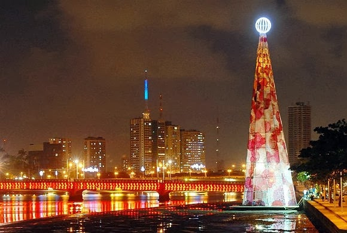

NOTÍCIAS DE RECIFE
Recife terá Réveillon com 45 atrações em polos descentralizados; confira programação
Saiu nesta sexta (22) a programação gratuita do Réveillon descentralizado do Recife.
Publicado em: 22/12/2023 14:29
Outro ponto de festejos da virada de ano será o Pina, na Zona Sul. A programação com os três dias contará com Ivte Sangalo, João Gomes e Alceu Valença, além de outos nomes nacionais e locais.
Nos bairros, a programação celebrará a diversidade da música, contemplando desde o brega de Anderson Neiff, Michelle Melo, Banda Sentimentos, Sheldon, Banda Kitara e Bateu a Química até o frevo de Nonô Germano, Ed Carlos, Marron Brasileiro, Almir Rouche e Gustavo Travassos.
Também embalarão a festa recifense grandes nomes do samba nacional, como Fundo de Quintal, Molejo e Sem Compromisso, que desfilarão seus refrões célebres para lembrar ao Recife que o show tem que continuar no ano que vem.
Os acordes cheios de alegria, força e história da tradicional cena do samba pernambucano também se farão presentes na festa, defendidos por atrações como Belo Xis, Ramos Silva e Wellingthon do Pandeiro, que congraçarão seus acordes e vozes num show único, além de Karynna Spinelli, com seu Clube do Samba, Gerlane Lops com Luiza Pérola e João do Morro.
Outros destaques da programação descentralizada preparada pelo poder público municipal para convidar a cidade inteira a receber o futuro com festa são Almério, Martins e Isadora Melo, Gabi do Carmo e Lucas dos Prazeres, representando uma nova geração de grandes músicos, compositores e vozes que confirmam a vocação do Recife para a poética musical.
______
Veja o que abre e o que fecha no período de Natal no Recife
Prefeitura, comércio de bairros e shoppings têm horários especiais.
Publicado em: 22/12/2023 05:40 | Atualizado em: 22/12/2023 06:03
Na segunda (25), será celebrado o Natal. Por causa da data, alguns serviços da Prefeitura do Recife terão funcionamentos alterados.
Durante o fim de semana, haverá atrações na cidade, como o espetáculo do Baile do Menino Deus, no Marco Zero, no bairro do Recife.
Já quem gosta de passear pela cidade em cima de duas rodas a dica é percorrer as rotas da Ciclofaixa de Turismo e Lazer, que funcionará normalmente nos dias 24 e 25, das 7h às 16h.
No feriado de Natal, 25 de dezembro, os serviços de vacinação estarão suspensos nos centros montados em quatro shopping da capital. São eles: Recife, em Boa Viagem; RioMar, no Pina; Tacaruna, em Santo Amaro; e Boa Vista, na área central da cidade.
Os serviços de urgência, emergência e internação permanecem 24 horas nas policlínicas Agamenon Magalhães, em Afogados, e Amaury Coutinho, na Campina do Barreto; e nas policlínicas e maternidades Barros Lima (Casa Amarela), Professor Bandeira Filho (Afogados) e Arnaldo Marques (Ibura), assim como nos hospitais pediátricos Maria Cravo Gama, em Afogados, e Helena Moura, na Tamarineira, porém com fechamento dos ambulatórios.